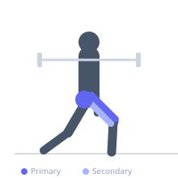

Exercise guide / Zercher Bulgarian Split Squat
Zercher Bulgarian Split Squat
A Bulgarian split squat variation where the barbell is cradled in the crooks of the elbows rather than placed across the upper back. The Zercher position forces a more upright torso, increases core bracing demands significantly, and shifts loading stress away from the spine while still providing strong quadriceps and glute stimulus.
Primary muscles
rectus femoris
vastus lateralis
vastus medialis
gluteus maximus
Secondary muscles
biceps femoris long head
gluteus medius
Stabilizers
transverse abdominis
erector spinae
biceps brachii long head
Equipment
Standard Barbell


Starting position
- Stand in a split stance with the rear foot elevated on a bench. Cradle the barbell in the crooks of both elbows, holding your forearms parallel to the floor.
Setup
- Set a barbell to roughly waist height in a rack. Cradle it in your elbow crooks, secure the grip, then walk to the bench and position your rear foot on it.
Steps
- Step 1: Brace your core hard and keep your torso upright throughout the movement.
- Step 2: Lower your rear knee toward the floor by bending both knees, maintaining an upright torso.
- Step 3: Descend until the front thigh is at or below parallel to the floor.
- Step 4: Drive through the front heel to return to the starting position, fully extending the front hip and knee.
Coaching cues
- Chest up, elbows forward
- Drive the floor away with your front heel
Breathing
- Inhale and brace before descending. Exhale at the top after completing the rep.
Range of motion
- Lower until the front thigh is parallel to the floor or below. Keep the rear shin roughly vertical.
Tempo
- 3-1-1-0 (3s eccentric, 1s pause, 1s concentric)
Common mistakes
- Letting the torso collapse forward under the Zercher load
- Allowing the front knee to cave inward during the ascent
Safety
- The Zercher position can stress the forearms and biceps tendons — use padding if needed and avoid very heavy loads initially
Training
- strength: 3–6 reps
- hypertrophy: 8–12 reps
- strength: 3–5 sets
- hypertrophy: 3–4 sets
- Rest: {'strength': 180, 'hypertrophy': 90}